Documentation of Project1
Visualization Design, Analysis, & Evaluation
Topic: London's 1854 cholera epidemic
Design Process
After reading the requirements of this assignment, I summarized functional and non-functional requirements for my project.
Functional Requirements:
- A map drawn with the area (streets and pumps) including the locations of the deaths.
- A timeline graph showing the number of deaths per day.
- Ability to move the mouse over the timeline graph to choose which day to visualize.
- Details on who wrote the project, where the data came from, etc.
- Label 5 major street names and the location of the brewery and the work house.
- Show on the map whether each victim was male or female.
- Show on the map the age of each victim.
- A graph shows the distribution of deaths by gender and age overall.
- Ability to visualize the overall graph (including gender and age) with the change of date.
- Zoom in/out and pan around the map.
Non-Functional Requirements:
- Stable graph and map.
- Well labelled graph and map.
- Friendly to people with colour blindness.
- Update quickly when the user interacts.
- Gender and age for each victim should be seen easily.
- Show data clearly.
- Do not confuse the user.
According to those requirements, I processed to design my project. Initially, I just came up with the sketch of the map and timeline and horizontal grouped bar chart. With the project going on, I draw sketches to help me modify the design.
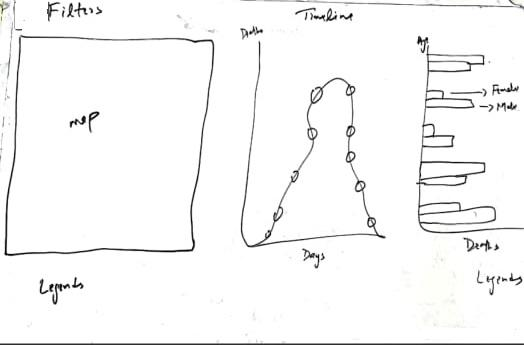
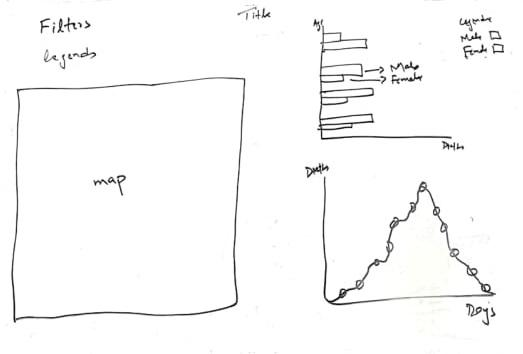
First, I wanted to make block for each graph, however, when I finished drawing the map, I found that it cannot be small enough to be placed in one block, so I rearranged the structure into the sketch on the right side. Finally, when I implemented the visualization, the layout is slightly different from this one.
Design Choices
After making sketches the design is 90% percent final and just colors combination and flow of filters arrangement is remaining so first, I choose to fill the circles white with black stokes because when they enter the page, there is no colour shows the gender or age of the victim. The combination of black and white looks like a graffiti board indicates there are colours needed to be filled in then I checked where I need different colors representation and how many color representations we have, then I used the ordinal color scale and set different colors according to requirements like
After this I have to select the filters arrangements and which filters options (radio button, dropdown list, buttons etc.) I will select to filter data so for this also first I have identified the filters requirements on different positions then decided where I have to use filters and where I have to use css display property to make visuals interactive. Filters I used to be as follows.
Discovered Facts:
- Mapped deaths on different locations by using paths and circle symbols also street names, pumps, brewery and work house with different color representations.
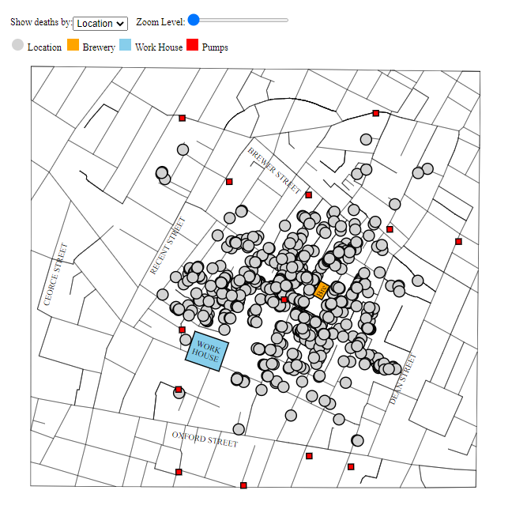
- Mapped deaths with respect to genders by using paths and circle symbols also street names, pumps, brewery and work house with different color representations.
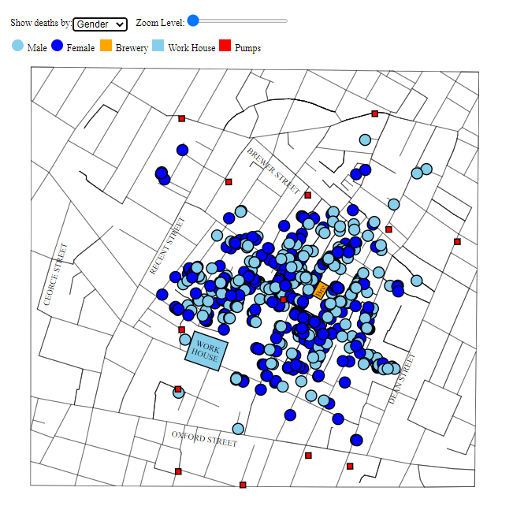
- Mapped deaths with respect to ages labels given in requirement description file with respect to data values by using paths and circle symbols also street names, pumps, brewery and work house with different color representations.
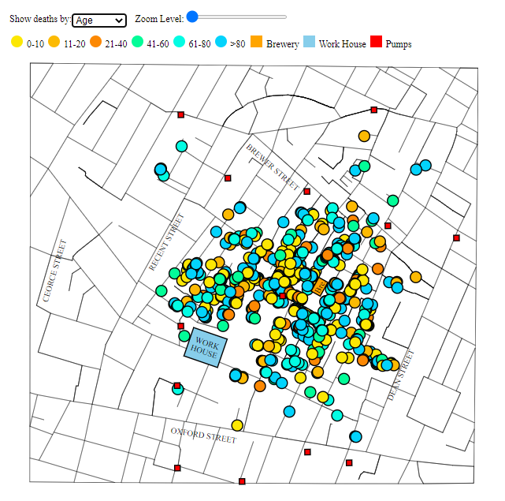
- Added zoom in/out feature using slider as input field and also pan functionality to drag the map on page to go to desire point after zoom as well. Also added the tooltip on mouse hover to show the age and gender of died person on any location.
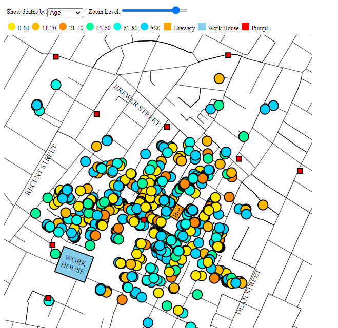
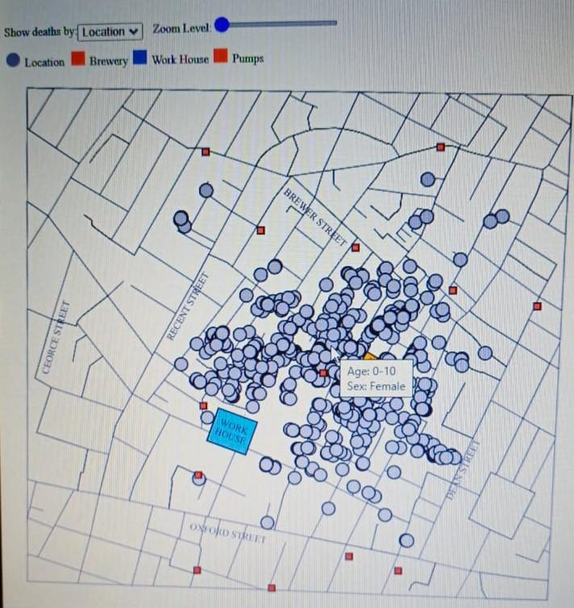
- A horizontal grouped bar chart used to display three data fields which is consist of ages, genders, and number of deaths. X axis represents numbers of deaths and y axis represents the age limits and groups represents genders and they are differing by using colors. Also, on mouse over listener I displayed the tooltip as well as generated interaction between bar plot and map on the basis of hovered bar data. For example, if a user hovered a bar which have age limit 0-10 and gender male, on map points with same data will highlighted.
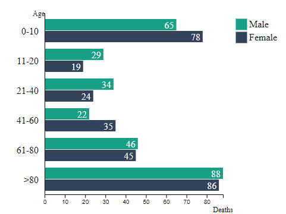
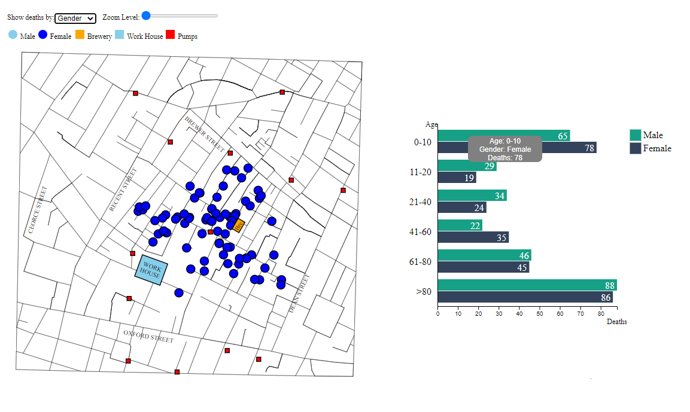
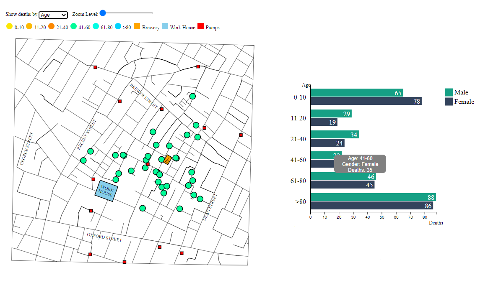
- A timeline graph used to display the numbers of deaths with respect to specific days and also circles are plotted to represent days on x axis and by hovering a title appears that will display the numbers of deaths and date on which these deaths happened.
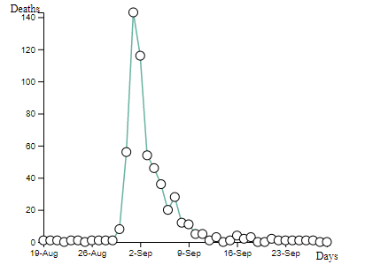